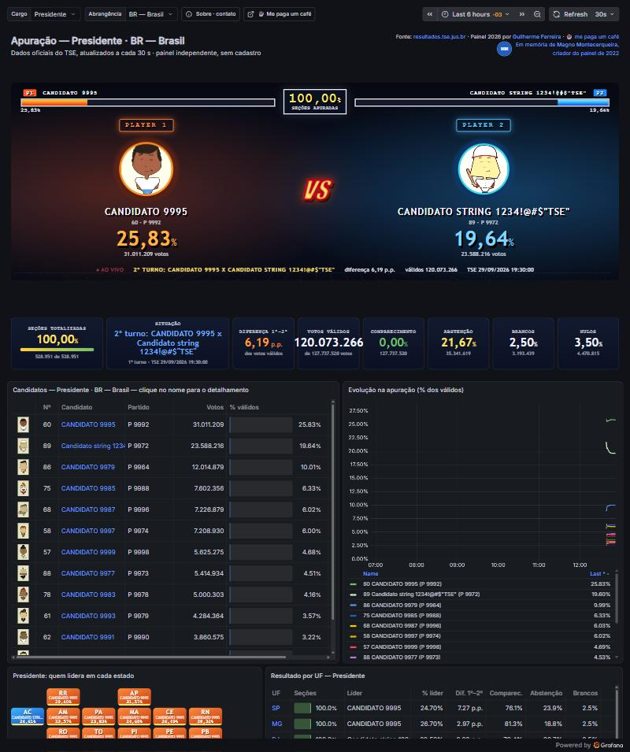

Eleições 2026 · apuração em tempo real
Dashboard Eleições 2026
com Zabbix e Grafana
Presidente, Governador e Senador, Brasil e estados, com os dados oficiais do TSE atualizados a cada minuto. Gratuito, sem cadastro e sem anúncios.
Carregando o endereço…
Tela de um ensaio com candidatos fictícios. No dia, o painel mostra os resultados oficiais.
Agradecimento ao idealizadorSansão Simonton, a quem devemos a ideia do painel para a comunidade Zabbix Brasil. Telegram: @sansaoipb.
Em memória de Magno MontecerqueiraPublicou o painel de 2022 na galeria do Grafana. Esta edição é uma homenagem a ele.
Como foi feitoArquitetura, segurança e testes no GitHub. Deixe uma estrela se gostou.